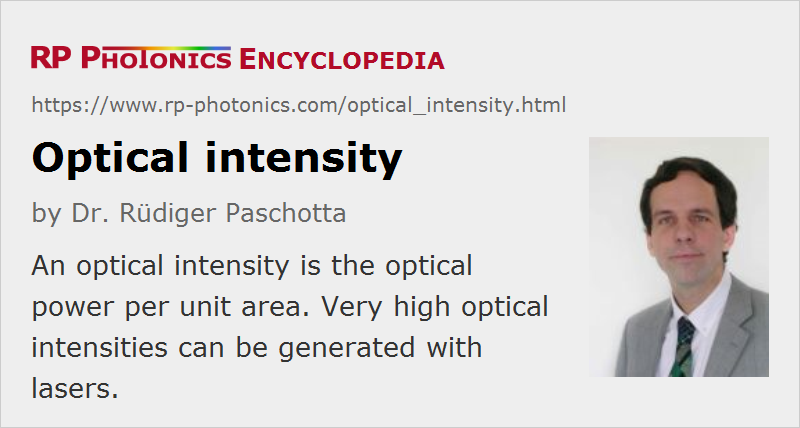

Optical Intensity
Definition: optical power per unit area
German: optische Intensität
Categories: general optics, light detection and characterization
Formula symbol: I
Units: W/m2, W/cm2
How to cite the article; suggest additional literature
Author: Dr. Rüdiger Paschotta
The term optical intensity (or just intensity) is quite common in optical physics and technology, but it is somewhat problematic, since it is used with substantially different meanings. One may recommend to use optical intensity only in a non-quantitative way and only use well-defined radiometric quantities like radiant intensity and irradiance for quantitative references. However, we must deal with literature using the term in different ways, as explained in the following sections. Certainly, for quantitative reference it is important to clearly indicate which meaning of intensity is used.
Non-quantitative and Inaccurate Meanings of Intensity
The term intensity is often used in a non-quantitative way. For example, such a statement could be “high intensity laser beams are used for material processing” – just like “the sun is very bright today”. An actual numerical value is not specified in such cases. Such non-quantitative statements rarely create a risk of misunderstanding.
In other cases, intensities are meant to be quantitative measures, but used in quite inaccurate ways. Sometimes, what is actually meant is for example an optical power, an irradiance or a radiant intensity – these are examples for very different quantities which should not be confused. Such uses of the term should be avoided, but in certain contexts they are nevertheless very common. An example is that the intensity noise of a laser normally refers to noise (fluctuations) of its optical power rather than e.g. an irradiance within its beam profile.
Intensities in Optical Physics
In optical physics, the intensity I, e.g. of a laser beam at some location, is generally understood to the optical power per unit area, which is transmitted through an imagined surface perpendicular to the propagation direction. The units of the optical intensity (or light intensity) are W/m2 or (more commonly) W/cm2. The intensity is the product of photon energy and photon flux. It is sometimes called optical energy flux.
For a monochromatic propagating wave, such as a plane wave or a Gaussian beam, the local intensity is related to the amplitude E of the electric field via
where vp is the phase velocity, c is the vacuum velocity of light, and n is the refractive index. For non-monochromatic waves, the intensity contributions of different spectral components can simply be added, if beat notes are not of interest.
Optical intensities and powers are normally understood as quantities which are averaged over at least one oscillation cycle. In other words, they are not considered to be oscillating on the time scale of an optical oscillation.
Note that the above equation does not hold for arbitrary electromagnetic fields. For example, an evanescent wave may have a finite electrical amplitude while not transferring any power. The intensity should then be defined as the magnitude of the Poynting vector.
When light is received by a surface, an optical intensity causes an irradiance, which is the intensity times the cosine of the angle against normal direction.
In laser technology, one frequently assumes the same meaning of intensity as an optical physics. For a laser beam with a flat-top intensity profile (i.e., with a constant intensity over some area, and zero intensity outside), the intensity is simply the optical power P divided by the beam area. For a Gaussian beam with optical power P and Gaussian beam radius w, the peak intensity (on the beam axis) is
which is two times higher than is often assumed. The equation can be verified by integrating the intensity over the whole beam area, which must result in the total power.
In a multimode laser beam, generated in a laser where higher-order transverse resonator modes are excited, the shape of the transverse intensity profile can undergo significant changes as the relative optical phases of the modes change with time. The peak intensity can then vary, and may occur at locations at some distance from the beam axis.
Optical intensities with the meaning as used in optical physics are relevant in various situations:
- In conjunction with transition cross sections, intensities govern the rates of optical transitions, e.g. in laser gain medium. Strong saturation of an optical transition in the steady state occurs when the intensity exceeds the saturation intensity.
- The refractive index change via the Kerr effect in a transparent medium is the nonlinear index times the local intensity.
- Laser-induced damage of a medium may occur for intensities above a certain damage threshold, which however can usually only be reached with optical pulses, and then depends on the pulse duration.
- Extremely high peak intensities can be achieved with amplified ultrashort pulses. For intensities of e.g. 1014 W/cm2 or higher in a gas, high harmonic generation can occur.
- The radiation pressure of light incident on a surface is proportional to the optical intensity.
Beam profilers can be used for measuring the shape of the intensity profile of a laser beam.
Intensities in Radiometry
In radiometry, the radiant intensity is understood to be the radiant flux (or radiant power) per unit solid angle, which leads to units of W/sr (watts per steradian). This meaning is obviously quite different from that of intensities in optical physics. It is usually applied with the approximation of a point source, i.e., for observation distances which are much larger than the spatial extension of the light source, where the wavefronts are approximately spherical.
At a distance d from a source with radiant intensity I, an area element with its normal direction towards the source receives an irradiance E = I / d2.
Questions and Comments from Users
Here you can submit questions and comments. As far as they get accepted by the author, they will appear above this paragraph together with the author’s answer. The author will decide on acceptance based on certain criteria. Essentially, the issue must be of sufficiently broad interest.
Please do not enter personal data here; we would otherwise delete it soon. (See also our privacy declaration.) If you wish to receive personal feedback or consultancy from the author, please contact him e.g. via e-mail.
By submitting the information, you give your consent to the potential publication of your inputs on our website according to our rules. (If you later retract your consent, we will delete those inputs.) As your inputs are first reviewed by the author, they may be published with some delay.
See also: irradiance, optical power, optical phase, Gaussian beams, laser beams, brightness, intensity noise, laser-induced damage, radiation pressure
and other articles in the categories general optics, light detection and characterization
|  |
If you like this page, please share the link with your friends and colleagues, e.g. via social media:
These sharing buttons are implemented in a privacy-friendly way!